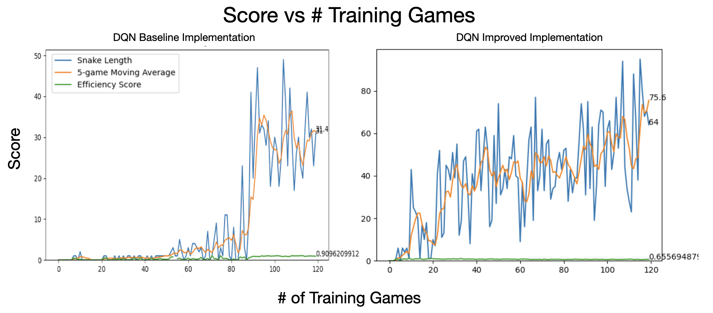

Off-Policy Reinforcement Learning Agent teaches itself how to play Snake
Skills: PyTorch, Pygame Design, Data Collection
Overview

In this project, I developed and optimized a Deep Q-Network (DQN) reinforcement learning agent to master the classic Snake game,
demonstrating significant improvements through architectural enhancements and advanced training techniques.
The project began with a baseline DQN implementation using a simple 11-dimensional state representation and basic neural network architecture.
Through systematic analysis, I aimed to make the agent more performant by improving the architecture into a sophisticated multi-modal neural network
processing richer state data (both compass-based directional information and visual field-of-view data) as well as optimizing the training
recipe, resulting in substantially improved performance and training stability.
Key innovations include:
Enhanced State Representation: Replaced simple binary danger detection with a rich 2D field-of-view system that captures spatial relationships and obstacle distances
Multi-Modal Neural Architecture: Designed a hybrid CNN-MLP network that separately processes visual and directional information before fusion
Advanced Training Techniques: Implemented priority experience replay, adaptive learning rate scheduling, and sophisticated epsilon-greedy exploration strategies
Hyperparameter Optimization: Systematic exploration of training configurations using parallel hyperparameter search across multiple agent instances
The optimized agent demonstrates markedly improved learning efficiency, achieving higher average scores with more consistent performance compared to the baseline implementation.
This project showcases the application of modern deep reinforcement learning techniques to a classic control problem, highlighting the importance of
thoughtful state representation and neural architecture design in RL applications.
The baseline DQN implementation serves as the foundation for this project, utilizing a straightforward approach to reinforcement learning in the Snake environment.
This implementation uses a simple but effective state representation and neural network architecture.
State Representation:
The baseline agent uses an 11-dimensional state vector that encodes:
Danger Detection (3 features): Binary indicators for collision danger in three relative directions:
Straight ahead relative to current movement direction
Right turn relative to current movement direction
Left turn relative to current movement direction
Current Direction (4 features): One-hot encoding of snake's current movement direction (North, East, South, West)
Food Location (4 features): Binary indicators for food position relative to snake head (North, East, South, West)
Neural Network Architecture:
The baseline model employs a simple fully-connected neural network:
Epsilon Schedule: Linear decay from 80 to 0 over the first 80 games
Training Recipe: Train QNet based on most recent (S,A,R,S,A) every frame (similar to Standard Bellman Equation, batch size of 1),
and train QNet on (S,A,R,S,A) batch from memory (batch size of 1000) every game-over
The baseline implementation provides a solid foundation but has limitations in state representation complexity and training recipe,
which motivated the development of the optimized version.
DQN Optimized Implementation Summary
The optimized DQN implementation represents a significant evolution from the baseline, incorporating advanced techniques
in state representation, neural architecture, and training methodology. The improvements focus on providing the agent
with richer environmental information and more sophisticated learning capabilities.
Enhanced State Representation:
The optimized agent processes two complementary data streams to allow for superior path planning:
Food-Finding Compass Information (4 features): Directional food detection with obstacle awareness
For each compass direction (North, East, South, West): -1 (no food), 0 (food but obstacle in this direction), 1 (food with no obstacle in this direction)
This replaces simple binary food location with path-finding intelligence: the old agent might move toward food even if the path is blocked, while
the new agent can distinguish between "food exists" and "food is reachable" and avoid getting trapped.
State representation is more dense: no need to tell agent food direction and snake direction, but instead only provide agent the compass vector
and encourage it to learn how its actions induce changes in this substate.
Obstacle Detection Field-of-View: Spatial (2D) awareness matrix centered on the snake head
Configurable visibility range of grid surrounding the snake head: 1 for obstacles (walls/body), 0 for free space
Orientation-aware: rotates perspective based on current movement direction
Multi-Modal Neural Architecture:
The QNet class implements a sophisticated hybrid CNN-MLP architecture:
Stream 1 (Compass Processing):
Fully-connected layers: 4 → 128 → 128 neurons
ReLU activations with dropout (p=0.1)
Stream 2 (Visual Processing):
2D Convolution: 1 → 3 channels, kernel size 2
Second convolution: 3 → 3 channels, kernel size 2
Fully-connected projection with residual connection
Dropout regularization (p=0.1)
Stream 3 (Fusion Network):
Concatenated features → 80 → 30 → 3 output neurons
ReLU activations throughout
Advanced Training Techniques (with optimal choices found via hyperparameter search):
Adaptive Learning Rate: StepLR scheduler with decay every 90 episodes
Flexible Epsilon Strategies: Support for both linear and exponential decay schedules
Priority Experience Replay: Enhanced replay buffer that prioritizes end-game experiences and applies reward modification
Configurable Memory Management: Reduced buffer size (10,000) with smaller batch sizes (512) for more frequent updates
Training Recipe: Train QNet on (S,A,R,S,A) batch from vanilla replay buffer every 4 frames, and train from priority
replay buffer on last n games every game-over to place emphasis on learning from game-over (negative reward) experience (only after 35 games when Agent understands game fundamentals)
Higher frequency experience replay was very important for Deep-Q Learning: without a replay buffer, an agent would learn from consecutive experiences, which are often
highly correlated (ie current state is very correlated with the next state) which can cause poor generalization.
By sampling experiences randomly from the Replay Buffer, the agent learns from a more diverse and less correlated set of experiences, leading to better learning stability.
A replay buffer also allows the agent to reuse past experiences multiple times (increasing the efficiency of past experiences rather than being too reliant on the
most recent actions which might not yet represent an optimal policy)
Hyperparameter Optimization Framework:
The AgentTrainer class supports systematic hyperparameter exploration through the agent_train_pipeline:
Parallel training of multiple agent configurations using ThreadPoolExecutor
Automated results collection and performance comparison
The optimized implementation demonstrates the power of thoughtful feature engineering and neural architecture design in reinforcement learning,
providing the agent with both local spatial awareness and global directional intelligence.
Findings and Results
After improving the QNet neural network architecture, creating richer state data, improving the training
recipe, and systematically exploring training/data related hyperparameters, we see strong performance improvement from the baseline DQN to the optimized DQN
implementation. In particular, the optimized implementation has the following differences:
Faster Learning: the baseline agent only learns when the epsilon for epsilon-greedy policy has sufficiently decayed (around Game 80/120), whereas the optimized agent
learns much faster and reaches the same approximate performance around Game 25/120.
Consistent Learning: the baseline agent plateaus after epsilon decay (with the same performance from Game 80 to final Game 120), whereas the optimized agent
continues to learn from its newly collected experience with a consistent positive trend in 5-game-moving-average of Snake length.
Higher Performance, with greater caution: the baseline agent has a high score of 49 and a final 5-game-moving-average of 31.4, whereas the optimized agent
has a high score of 96 and a final 5-game-moving-average of 75.5. At the same time, the optimized agent is "less efficient" as it takes more frames to get to the food
compared to the baseline agent (but does so in order to be better rewarded for longer Snake lengths and better survivability).
After hyperparameter search, the following parameters were proven to be the most performant for training:
Replay Buffer Size : 10_000 entries (remembers the last ~15-20 games)
Batch Size : 500
Alpha : 0.001
Alpha Decay : True (StepLR learning rate optimizer for DQN)
Gamma : 0.7
Epsilon : 0.4
Epsilon Floor : 0.0 (minimal Epsilon value for decay process)
Epsilon Decay Type : Exponential
Epsilon Decay Limit: 80 (# of games until Epsilon Floor is hit)
Priority Replay Buffer Enable : True (allow for additional priority replay training at end of every episode)
The final trained model weights were saved. Running inference.py with pretrained best model weights, we see the following across a sample of 10 games:
Record Length: 115
Mean(Last 10 Games Length): 83.2
Stdev(Last 10 Games Length): 24.4
Reinforcement Learning Theory Overview
Reinforcement Learning (RL) is a machine learning paradigm where an agent learns to make decisions by interacting with an environment
to maximize cumulative reward. In the context of the Snake game, the agent must learn to navigate the game board, collect food,
and avoid collisions through trial and error.
The fundamental RL framework consists of:
Agent: The decision-making entity (our DQN)
Environment: The Snake game world
State ($s$): Current game configuration (snake position, food location, etc.)
Action ($a$): Possible moves (straight, left turn, right turn)
Reward ($r$): Feedback signal (+10 for food, -10 for collision, 0 otherwise)
Policy ($\pi$): Strategy for selecting actions given states
The goal is to learn an optimal policy $\pi^*$ that maximizes the expected cumulative reward over time.
Standard Bellman Equation
The Q-learning algorithm uses the Bellman equation to iteratively improve estimates of action-value pairs.
The core update rule that drives learning is:
$Q(s,a)$ is the current estimate of the "score" for taking action $a$ in state $s$
$\alpha \in (0,1]$ is the learning rate, controlling how much we update our estimate
$r$ is the immediate reward received from taking action $a$ in state $s$
$\gamma \in [0,1]$ is the discount factor, determining how much we value future rewards
$s'$ is the new state reached after taking action $a$
$\max_{a'} Q(s',a')$ is our best estimate of future value from the new state
Intuitive Understanding:
Think of this equation as updating our "score" for each {State, Action} pair using this logic:
Score of {State, Action} = Existing "Score" + (learning rate) × [(Reward from entering {State, Action}) + (Discounted Estimate of Future Rewards) - (Existing "Score")]
The term in brackets $[r + \gamma \max_{a'} Q(s',a') - Q(s,a)]$ represents the "prediction error" -
the difference between what we expected to get (our current Q-value) and what we actually experienced
(immediate reward plus our best estimate of future rewards).
When this error is positive, we increase our Q-value estimate. When negative, we decrease it.
Over many iterations, these updates converge to the optimal action-values that maximize long-term reward.
Epsilon-Greedy Algorithm
The epsilon-greedy algorithm addresses the exploration-exploitation dilemma in reinforcement learning.
The agent must balance between exploiting current knowledge to maximize immediate reward and exploring new actions
to potentially discover better strategies.
The epsilon-greedy policy selects actions according to:
$$
a_t = \begin{cases}
\arg\max_a Q(s_t, a) & \text{with probability } 1-\epsilon \text{ (exploitation)} \\
\text{random action} & \text{with probability } \epsilon \text{ (exploration)}
\end{cases}
$$
where $\epsilon \in [0,1]$ is the exploration rate.
Exploration Scheduling:
Both implementations use decaying epsilon schedules to shift from exploration to exploitation over time:
Available in optimized version: more gradual transition from exploration to exploitation
The intuition is that early in training, the agent knows little and should explore widely. As learning progresses
and Q-values become more accurate, the agent should rely more heavily on its learned knowledge.
Implementation Details:
In our Snake agent, epsilon-greedy action selection works as follows:
Generate random number $r \sim \text{Uniform}(0,1)$
If $r < \epsilon$: select random action from {straight, left, right}
If $r \geq \epsilon$: select $\arg\max_a Q(s, a)$ using the neural network
Deep-Q Network (DQN) Bellman Equation
Deep Q-Networks extend the Q-learning update rule by using neural networks to approximate the Q-function.
Instead of maintaining a lookup table for every possible {state, action} pair, we use a neural network to generalize
across similar states and estimate Q-values for unseen situations.
Function Approximation:
The neural network $Q(s,a;\theta)$ with parameters $\theta$ approximates our Q-value function:
$$Q(s,a;\theta) \approx Q^*(s,a)$$
DQN Target Computation:
In DQN, we conceptually follow the same update rule as standard Q-learning, but instead of directly updating
Q-values in a table, we train our neural network to predict target values. The target is computed as:
$$Q(s,a) \leftarrow r + \gamma \max_{a'} Q(s', a')$$
Notice this looks identical to the standard Q-learning equation, but with a crucial difference: we set $\alpha = 1$
(no learning rate in the Bellman update itself). Instead, the learning rate is transferred to the neural network
optimizer that performs gradient descent.
Neural Network Training:
The network is trained to minimize the mean squared error between its predictions and the Bellman targets:
$$L(\theta) = \mathbb{E}\left[(r + \gamma \max_{a'} Q(s', a'; \theta) - Q(s,a;\theta))^2\right]$$
The parameters are updated using gradient descent with learning rate $\alpha_{optimizer}$:
$$\theta \leftarrow \theta - \alpha_{optimizer} \nabla_\theta L(\theta)$$
Key Intuition - DQN vs Standard Q-Learning:
In standard Q-learning, we directly update individual Q-values using a learning rate $\alpha$ to control how much
we change our estimates. In DQN, we instead:
Set the Bellman target as the "ground truth" (using $\alpha = 1$)
Let the neural network learn gradually through many gradient descent steps with learning rate $\alpha_{optimizer}$
Benefit from generalization: When we update the network for one {state, action} pair, similar states automatically get improved estimates
This approach allows the network to learn complex patterns and generalize across the state space, enabling the agent
to make intelligent decisions in states it has never directly experienced during training.
Snake Game Overview
The Snake game serves as an excellent testbed for reinforcement learning algorithms, providing a discrete control problem
with clear objectives, immediate feedback, and increasing difficulty as the agent improves.
Game Mechanics:
Grid World: The game takes place on a rectangular grid (typically 20x20 blocks)
Snake Movement: The snake moves continuously in its current direction, advancing one block per time step
Action Space: Three discrete actions available:
Continue straight
Turn left (relative to current direction)
Turn right (relative to current direction)
Food Mechanics: Food appears randomly on empty grid cells. When consumed, the snake grows by one segment